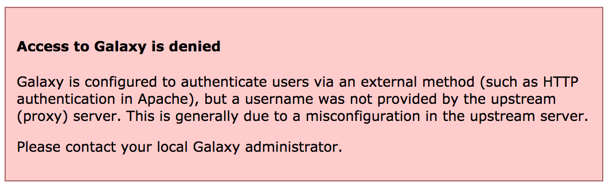

External Authentication
 Nate Coraor
Nate Coraor Nicola Soranzo
Nicola Soranzo Helena Rasche
Helena RascheOverview
Questions:Objectives:
How can I connect Galaxy with CAS, SAML, etc.
Requirements:
be familiar with configuring Galaxy to use an upstream (proxy) authentication provider
be able to log in to your Galaxy server with a file-configured user.
- Galaxy Server administration
- Ansible: slides slides - tutorial hands-on
- Galaxy Installation with Ansible: slides slides - tutorial hands-on
Time estimation: 30 minutesSupporting Materials:Last modification: Jun 22, 2021
 Questions:
Questions:
Overview
For this exercise we will use a basic password file method for authenticating - this is probably not a very useful method in production, but it demonstrates how the proxy server can be configured to provide the correct header to Galaxy, and how Galaxy integrates with upstream authentication providers. This same method can be used with NGINX and Apache modules for CAS or SAML authentication.
Agenda
Configuring Authentication
hands_on Hands-on: Configuring everything
- Edit the galaxy.j2 template file in the templates/nginx directory and update the main location block defined for serving galaxy. Add the parameters:
auth_basic galaxy;auth_basic_user_file /etc/nginx/passwd;uwsgi_param HTTP_REMOTE_USER $remote_user;uwsgi_param HTTP_GX_SECRET SOME_SECRET_STRING;It should look like:
@@ -14,6 +14,10 @@ uwsgi_pass 127.0.0.1:5000; uwsgi_param UWSGI_SCHEME $scheme; include uwsgi_params; + auth_basic galaxy; + auth_basic_user_file /etc/nginx/passwd; + uwsgi_param HTTP_REMOTE_USER $remote_user; + uwsgi_param HTTP_GX_SECRET SOME_SECRET_STRING; } # Static files can be more efficiently served by Nginx. Why send the
tip Running this tutorial just for Reports?
Add the
auth_basicandauth_basic_user_filelines to yourlocation /reports/
auth_basicenables validation of username and password using the “HTTP Basic Authentication” protocol. Its valuegalaxyis used as a realm name to be displayed to the user when prompting for credentials.auth_basic_user_filespecifies the file that keeps usernames and passwords.uwsgi_paramaddsHTTP_REMOTE_USERto the special variables passed by nginx to uwsgi, with value$remote_user, which is a nginx embedded variable containing the username supplied with the Basic authentication.
GX_SECRETis added as a header for security purposes, to prevent any other users on the system impersonating nginx and sending requests to Galaxy. NGINX and other webservers like Apache will strip any user-sentREMOTE_USERheaders, as that header defines the authenticated user. If you can talk directly to Galaxy (e.g. via curl) and provide theREMOTE_USERheader, you can impersonate any other use. While having Galaxy listen on127.0.0.1prevents any requests from outside of the system reaching Galaxy, anyone on the system can still send requests to that port. Here you can choose to switch to a unix socket with permissions only permitting Galaxy and Nginx to connect.GX_SECRETadds additional security as it needs to matchremote_user_secretin your galaxy configutation.tip Proxy bypass
Users can bypass the authentication only if they can talk directly to the uWSGI processes (if you have socket/http: 0.0.0.0, or if it is directly responsible for serving galaxy, and there is no proxy.) This can happen mostly when some users have command line access to the Galaxy server, which is considered a bad practice.
Add a pre_task using the
pipmodule which installs the librarypasslib, which is required forhtpasswd.Add a pre_task using the
htpasswdmodule which sets up a password file in/etc/nginx/passwd, with owner and group set to root, and a name and password, and a mode of 0640.question Question
How does your final configuration look?
solution Solution
@@ -7,6 +7,15 @@ name: galaxy state: restarted pre_tasks: + - pip: + name: passlib + - htpasswd: + path: /etc/nginx/passwd + name: user1 # Pick a username + password: changeme # and a password + owner: www-data # nginx on centos + group: root + mode: 0640 - name: Install Dependencies package: name: ['git', 'make', 'python3-psycopg2', 'virtualenv']Galaxy needs to be instructed to expect authentication to come from the upstream proxy. In order to do this, set the following two options in your Galaxy group variables:
... galaxy_config: galaxy: ... use_remote_user: true remote_user_maildomain: "{{ inventory_hostname }}" remote_user_secret: SOME_SECRET_STRINGtip Running this tutorial just for Reports?
You don’t need to make the above changes for Galaxy then.
Set the
remote_user_maildomainoption to the appropriate domain name for your site.Run the playbook
comment Access denied
If you see this message, it is because nginx is not correctly sending the
REMOTE_USERor theGX_SECRETvalues.
Testing
You should now be presented with a password dialog when attempting to load the Galaxy UI.
hands_on Hands-on: Testing
Log in using the username and password you provided when creating the
passwdfile. If your username and the value ofremote_user_maildomainmatch an existing user, you will be logged in to that account. If not, a new account will be created for that user.Click on the “User” menu at the top, to see how the username appears.
Note that some user features are not available when remote user support is enabled.
Try logging out by selecting User -> Logout. You will discover that when returning to the user interface, you are still logged in. This is because Galaxy has no way of logging you out of the proxy’s authentication system. Instead, you should set
remote_user_logout_hrefingalaxy.ymlto point to the URL of your authentication system’s logout page.
API access
If you wish your Galaxy to be accessible to command line clients (e.g. bioblend, blend4j, parsec), you will need to add an exception for authentication on the API. Galaxy will still be secure and protected, but non-browser access will be permitted with an API key.
location /api/ {
satisfy any;
allow all;
}
tip Notification of Registration
There is no built-in way to be notified if users are registered, with external authentication or built-in. However, you could automate this easily. There is a gxadmin command we use called
gxadmin query latest-userswhich Björn uses often. Other sites have other methods, e.g. Nicola’s cron script which runs daily on his server, to add new users to a group according to their email domain name.
Reverting
We don’t want to leave Galaxy this way for the rest of our workshop.
hands_on Hands-on: Reverting the changes
Edit your group variables file and comment out:
- the NGINX changes
use_remote_user: trueRun the playbook
Key points
Remote auth is not complex to set up and can help you meet institutional requirements
Frequently Asked Questions
Have questions about this tutorial? Check out the FAQ page for the Galaxy Server administration topic to see if your question is listed there. If not, please ask your question on the GTN Gitter Channel or the Galaxy Help ForumFeedback
Did you use this material as an instructor? Feel free to give us feedback on how it went.

Citing this Tutorial
- Nate Coraor, Nicola Soranzo, Helena Rasche, 2021 External Authentication (Galaxy Training Materials). https://training.galaxyproject.org/training-material/topics/admin/tutorials/external-auth/tutorial.html Online; accessed TODAY
- Batut et al., 2018 Community-Driven Data Analysis Training for Biology Cell Systems 10.1016/j.cels.2018.05.012
details BibTeX
@misc{admin-external-auth, author = "Nate Coraor and Nicola Soranzo and Helena Rasche", title = "External Authentication (Galaxy Training Materials)", year = "2021", month = "06", day = "22" url = "\url{https://training.galaxyproject.org/training-material/topics/admin/tutorials/external-auth/tutorial.html}", note = "[Online; accessed TODAY]" } @article{Batut_2018, doi = {10.1016/j.cels.2018.05.012}, url = {https://doi.org/10.1016%2Fj.cels.2018.05.012}, year = 2018, month = {jun}, publisher = {Elsevier {BV}}, volume = {6}, number = {6}, pages = {752--758.e1}, author = {B{\'{e}}r{\'{e}}nice Batut and Saskia Hiltemann and Andrea Bagnacani and Dannon Baker and Vivek Bhardwaj and Clemens Blank and Anthony Bretaudeau and Loraine Brillet-Gu{\'{e}}guen and Martin {\v{C}}ech and John Chilton and Dave Clements and Olivia Doppelt-Azeroual and Anika Erxleben and Mallory Ann Freeberg and Simon Gladman and Youri Hoogstrate and Hans-Rudolf Hotz and Torsten Houwaart and Pratik Jagtap and Delphine Larivi{\`{e}}re and Gildas Le Corguill{\'{e}} and Thomas Manke and Fabien Mareuil and Fidel Ram{\'{\i}}rez and Devon Ryan and Florian Christoph Sigloch and Nicola Soranzo and Joachim Wolff and Pavankumar Videm and Markus Wolfien and Aisanjiang Wubuli and Dilmurat Yusuf and James Taylor and Rolf Backofen and Anton Nekrutenko and Björn Grüning}, title = {Community-Driven Data Analysis Training for Biology}, journal = {Cell Systems} }